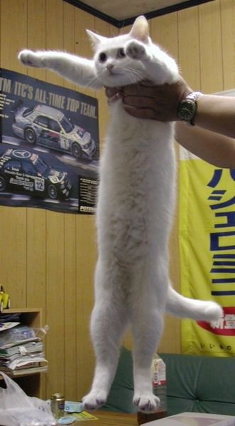

В HTML текст можно выделять с помощью полужирного и курсивного выдления. Можно делать шрифт
маленьким, а также смещать текст вниз и вверх, например для формул: C2H5OH или
x2+y2=z2. Для дополнительного выделения текст можно подчеркнтуь,
зачеркнуть или выделить.
// код на Java
public static void main(String[] args) {
}
Текст с
сохренинием исход-
ного форматирования
Для научного форматирования можно использовать аббревиатуры и цитаты
Если нужно выделить цитату отдельным блоком
Существуют блочные цитаты
Волк волку волк
Ссылки могут открываться в текущем или в новом окне браузера
Котоссылка

Ссылка на котоссылку, почти как указатель на указатель
Пример карты изображения